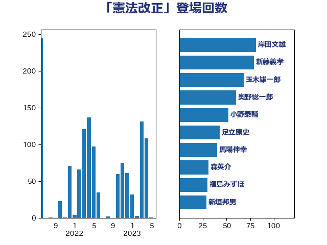

単語「憲法改正」

| 岸田文雄 | 自由民主党 | 81 回 |
| 新藤義孝 | 自由民主党 | 79 回 |
| 玉木雄一郎 | 国民民主党 | 68 回 |
| 奥野総一郎 | 立憲民主党 | 60 回 |
| 小野泰輔 | 日本維新の会 | 52 回 |
| 足立康史 | 日本維新の会 | 43 回 |
| 馬場伸幸 | 日本維新の会 | 40 回 |
| 森英介 | 自由民主党 | 31 回 |
| 福島みずほ | 社会民主党 | 30 回 |
| 新垣邦男 | 立憲民主党 | 29 回 |
| 船田元 | 自由民主党 | 22 回 |
| 北側一雄 | 公明党 | 22 回 |
| 東徹 | 日本維新の会 | 21 回 |
| 階猛 | 立憲民主党 | 20 回 |
| 小西洋之 | 立憲民主党 | 19 回 |
| 北神圭朗 | 無所属 | 19 回 |
| 中川正春 | 立憲民主党 | 18 回 |
| 三木圭恵 | 日本維新の会 | 16 回 |
| 山添拓 | 日本共産党 | 13 回 |
| 國重徹 | 公明党 | 13 回 |
| 務台俊介 | 自由民主党 | 13 回 |
| 道下大樹 | 立憲民主党 | 12 回 |
| 松沢成文 | 日本維新の会 | 10 回 |
| 柴田巧 | 日本維新の会 | 9 回 |
| 杉尾秀哉 | 立憲民主党 | 9 回 |
| 矢倉克夫 | 公明党 | 8 回 |
| 打越さく良 | 立憲民主党 | 8 回 |
| 山下貴司 | 自由民主党 | 8 回 |
| 赤嶺政賢 | 日本共産党 | 7 回 |
| 山本太郎 | れいわ新選組 | 7 回 |
| 中谷元 | 自由民主党 | 7 回 |
| 辻元清美 | 立憲民主党 | 6 回 |
| 舞立昇治 | 自由民主党 | 6 回 |
| 篠原孝 | 立憲民主党 | 6 回 |
| 本庄知史 | 立憲民主党 | 6 回 |
| 大島敦 | 立憲民主党 | 6 回 |
| 石破茂 | 自由民主党 | 5 回 |
| 浜田聡 | NHK党 | 5 回 |
| 浅田均 | 日本維新の会 | 5 回 |
| 松川るい | 自由民主党 | 5 回 |
| 山谷えり子 | 自由民主党 | 5 回 |
| 高木かおり | 日本維新の会 | 4 回 |
| 音喜多駿 | 日本維新の会 | 4 回 |
| 進藤金日子 | 自由民主党 | 4 回 |
| 谷田川元 | 立憲民主党 | 4 回 |
| 西田実仁 | 公明党 | 4 回 |
| 舟山康江 | 国民民主党 | 4 回 |
| 稲田朋美 | 自由民主党 | 4 回 |
| 石川大我 | 立憲民主党 | 4 回 |
| 石垣のりこ | 立憲民主党 | 4 回 |
| 熊田裕通 | 自由民主党 | 4 回 |
| 岩谷良平 | 日本維新の会 | 4 回 |
| 山田宏 | 自由民主党 | 4 回 |
| 山下雄平 | 自由民主党 | 4 回 |
| 大串正樹 | 自由民主党 | 4 回 |
| 古賀千景 | 立憲民主党 | 4 回 |
| 前川清成 | 日本維新の会 | 4 回 |
| 近藤昭一 | 立憲民主党 | 3 回 |
| 羽田次郎 | 立憲民主党 | 3 回 |
| 石井苗子 | 日本維新の会 | 3 回 |
| 柴山昌彦 | 自由民主党 | 3 回 |
| 林芳正 | 自由民主党 | 3 回 |
| 岡本あき子 | 立憲民主党 | 3 回 |
| 小沢雅仁 | 立憲民主党 | 3 回 |
| 大塚耕平 | 国民民主党 | 3 回 |
| 堀井巌 | 自由民主党 | 3 回 |
| 城井崇 | 立憲民主党 | 3 回 |
| 吉良よし子 | 日本共産党 | 3 回 |
| 吉田宣弘 | 公明党 | 3 回 |
| 高野光二郎 | 自由民主党 | 2 回 |
| 越智隆雄 | 自由民主党 | 2 回 |
| 藤田文武 | 日本維新の会 | 2 回 |
| 藤井比早之 | 自由民主党 | 2 回 |
| 茂木敏充 | 自由民主党 | 2 回 |
| 臼井正一 | 自由民主党 | 2 回 |
| 細野豪志 | 自由民主党 | 2 回 |
| 米山隆一 | 立憲民主党 | 2 回 |
| 石井準一 | 自由民主党 | 2 回 |
| 甘利明 | 自由民主党 | 2 回 |
| 浜野喜史 | 国民民主党 | 2 回 |
| 枝野幸男 | 立憲民主党 | 2 回 |
| 平木大作 | 公明党 | 2 回 |
| 山田賢司 | 自由民主党 | 2 回 |
| 山本順三 | 自由民主党 | 2 回 |
| 古庄玄知 | 自由民主党 | 2 回 |
| 加藤明良 | 自由民主党 | 2 回 |
| 齋藤健 | 自由民主党 | 1 回 |
| 青柳仁士 | 日本維新の会 | 1 回 |
| 阿部知子 | 立憲民主党 | 1 回 |
| 辻清人 | 自由民主党 | 1 回 |
| 西田昌司 | 自由民主党 | 1 回 |
| 西村智奈美 | 立憲民主党 | 1 回 |
| 西村康稔 | 自由民主党 | 1 回 |
| 蓮舫 | 立憲民主党 | 1 回 |
| 篠原豪 | 立憲民主党 | 1 回 |
| 福山哲郎 | 立憲民主党 | 1 回 |
| 石井正弘 | 自由民主党 | 1 回 |
| 田野瀬太道 | 無所属 | 1 回 |
| 片山さつき | 自由民主党 | 1 回 |
| 熊谷裕人 | 立憲民主党 | 1 回 |
| 浜地雅一 | 公明党 | 1 回 |
| 泉健太 | 立憲民主党 | 1 回 |
| 水野素子 | 立憲民主党 | 1 回 |
| 森山浩行 | 立憲民主党 | 1 回 |
| 梅村みずほ | 日本維新の会 | 1 回 |
| 柳ヶ瀬裕文 | 日本維新の会 | 1 回 |
| 松下新平 | 自由民主党 | 1 回 |
| 杉本和巳 | 日本維新の会 | 1 回 |
| 本村伸子 | 日本共産党 | 1 回 |
| 有村治子 | 自由民主党 | 1 回 |
| 斎藤洋明 | 自由民主党 | 1 回 |
| 斎藤アレックス | 国民民主党 | 1 回 |
| 掘井健智 | 日本維新の会 | 1 回 |
| 岡田克也 | 立憲民主党 | 1 回 |
| 山本有二 | 自由民主党 | 1 回 |
| 山本剛正 | 日本維新の会 | 1 回 |
| 小野寺五典 | 自由民主党 | 1 回 |
| 小林鷹之 | 自由民主党 | 1 回 |
| 小川淳也 | 立憲民主党 | 1 回 |
| 安江伸夫 | 公明党 | 1 回 |
| 大椿ゆうこ | 立憲民主党 | 1 回 |
| 嘉田由紀子 | 無所属 | 1 回 |
| 吉田はるみ | 立憲民主党 | 1 回 |
| 吉田とも代 | 日本維新の会 | 1 回 |
| 古川禎久 | 自由民主党 | 1 回 |
| 古屋圭司 | 自由民主党 | 1 回 |
| 勝部賢志 | 立憲民主党 | 1 回 |
| 倉林明子 | 日本共産党 | 1 回 |
| 佐藤英道 | 公明党 | 1 回 |
| 佐藤正久 | 自由民主党 | 1 回 |
| 佐々木さやか | 公明党 | 1 回 |
| 伊藤孝江 | 公明党 | 1 回 |
| 中曽根弘文 | 自由民主党 | 1 回 |
| 上月良祐 | 自由民主党 | 1 回 |
| 上川陽子 | 自由民主党 | 1 回 |